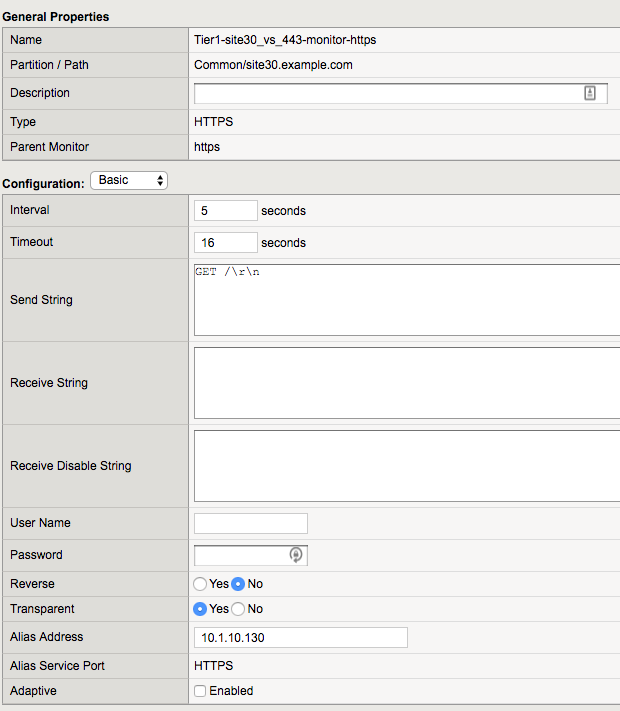

F5 BIG-IQ & Cloud Edition Lab > Class 2: BIG-IQ Deployment with auto-scale on AWS, Azure & VMware (Cloud Edition) > Module 2: Deploy an application on a SSG (VMWare) Source | Edit on
Lab 2.2: Review our application deployment¶
Now that our application is deployed, we can review the configuration of our
BIG-IPs in the Service Scaling Group and in our Service Scaler
cluster
If you go in your SSG SSGClass2, click on Configuration and then on
Applications. You’ll see our application listed here

SSG Setup for our Application¶
Use again the RDP session to have access to your BIG-IPs in your SSG
SSGClass2
Note
you can review their IP address by going in your SSG, Click on
Configuration and then Devices
On each BIG-IP in your SSG, you should have an identical setup:
{kind=link}
{kind=link}

Note
we disable ARP on the Virtual Address since the same VS IP is used on
all our SSG devices
Service Scaler Setup for our Application¶
Connect to your BIG-IPs used as Service Scaler: BOS-vBIGIP01.termmarc.com and
BOS-vBIGIP02.termmarc.com
Here you should see this setup:

Note
we do L4 LB, so we use FastL4 VS.
{kind=link}
Note
we don’t do Destination IP translation and if you switch to advanced view,
you’ll see that Address Translation and Port Translation are disabled.
This means that your Service Scaler BIG-IP and BIG-IPs in your
SSG must be able to communicate via L2.
For the pool setup, you can see that we use our BIG-IPs Self-IPs and not the VS
address 10.1.10.130
Note
Remember that BIG-IQ will use the SSG Device Self IP called external as pool member
{kind=link}
For the pool monitor, we created a custom http monitor with the following settings:
We have enabled the transparent option and setup the Alias address (ie send the monitor to this destination IP
through the Alias Address specified)
Next we can review the different analytics data available for your SSG SSGClass2